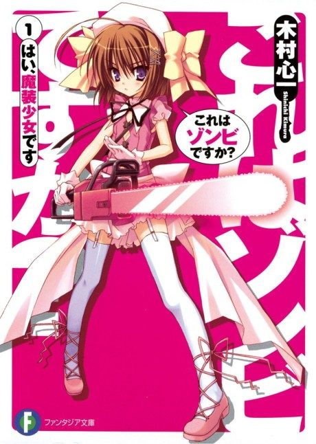

Is this a Zombie?
これはゾンビですか?
The anime takes the story to Unclear.
6.9AniList score
—Animeter, no votes yet
22episodes, 2 seasons
2 seasons, 22 episodes
In airing order. Episode numbers on this site count straight through every season, so season 2 starts at episode 13.
1
2011 · TV
Is this a Zombie?
Episodes1–1212 ep
2
2012 · TV
Is this A Zombie? of the Dead
Episodes13–2210 ep
Films, OVAs and specials
Not counted in the episode numbers above.
·
2011 · OVA
Is this a Zombie? OVA
·
2012 · OVA
Is This a Zombie? Of the Dead: Yes, This Suits Me Just Fine
Sources: AniList